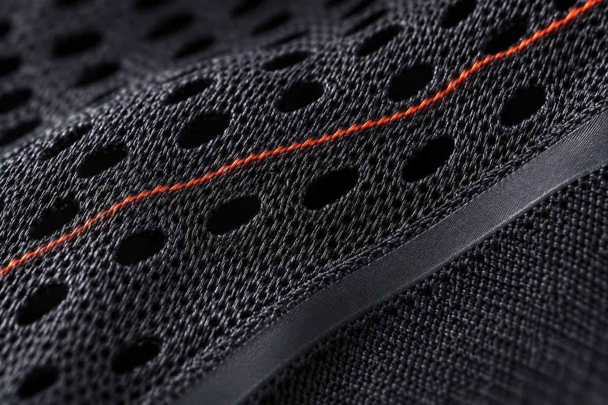

"프리미엄 기능성 원단으로
가볍고 시원하게!"
- #통기성 #경량성 #쿨링감
- "땀이 빠르게 마르는 소재"
- "어떤 날씨에도 OK"
→ 그래서 얼마나 가벼운지, 몇 도에 입는지 알 수 없음
01 — 문제
한국 러닝 브랜드의 상세페이지는 대부분 왼쪽입니다. 원단 중량 하나 알려고 고객센터에 전화해야 했던 경험이 이 제안의 시작이에요.
→ 그래서 얼마나 가벼운지, 몇 도에 입는지 알 수 없음
→ 비교 가능, 검증 가능, 그리고 선택 가능
원단 장사를 하는 대기업조차 "프리마로프트 액티브 이볼브 썼어요"까지만 말합니다. 중량은 전화해서 물어봐야 했죠. 숫자를 공개하는 첫 한국 러닝 브랜드가 되는 건, 광고비보다 싼 신뢰입니다.
02 — 투 트랙
도요타는 패밀리카를 그대로 팔면서 GAZOO Racing으로 모터스포츠 기술과 팬덤을 쌓습니다. 레이스에서 검증된 기술은 다시 양산차로 내려오죠. 네스클도 같은 구조가 가능합니다.
NESCL
NESCL R

R 싱글렛에서 검증한 레이저 타공 패턴을 다음 시즌 타이다잉 싱글렛에 적용하는 식입니다. 스타일 라인 고객은 "레이싱에서 내려온 기술"이라는 스토리를, 덕후는 숫자를 얻습니다.
03 — 스펙 읽는 법
WISE처럼 수치만 던지지 않고 "이 숫자가 높으면 무엇이 좋은지"까지 알려주면 덕후가 아닌 고객도 따라옵니다.

04 — R 라인업 (콘셉트)
카드를 누르면 WISE식 상세 스펙 페이지가 열립니다. 이미지의 점을 눌러 디테일을 확인하세요.
05 — 한눈에 비교
시험 기준 예시: 중량 KS K ISO 3801 · 통기도 ASTM D737(125 Pa) · 투습도 JIS L 1099 B-1 · 증발저항 ISO 11092 · 보온 ISO 15831
06 — 레이어링 가이드
"어떤 날씨에도 OK" 대신, 조건을 넣으면 조합과 총 보온지수(CLO)를 알려주는 도구.
07 — 현실적인 로드맵
템프 발란스 · 그리드 벤틸 후드슬리브, 제로쉘 바람막이 상세페이지에 원단 중량(GSM)과 혼용률, 원단사 정보를 표로 추가. 원단사 시험성적서에 이미 있는 숫자입니다.
레이스 싱글렛 + 하프타이츠처럼 수치로 승부 가능한 품목부터. 춘천·JTBC 마라톤 시즌에 맞춰 출시, 서브3 크루에게 필드 테스트.
"35km 지점 쓸림 0건 / 12명" 같은 필드 데이터, 세탁 50회 후 신장 회복률 같은 내구성 데이터를 저널로 발행.
검증된 원단·공정을 타이다잉 라인에 적용. "R-Tech" 태그로 스타일 라인의 기능 신뢰도까지 끌어올립니다.
08 — 참고한 브랜드